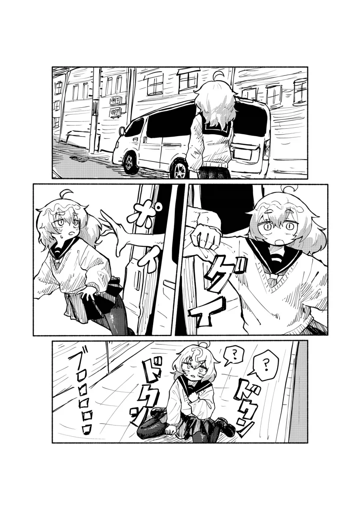

33 · 9 · 8 시간 전 · 원문

인도로 다녀 이년아
수집 당시 댓글 9개
히수 · 13 시간 전
인도봉고 ㄷㄷ
독고무영 · 11 시간 전
[전송]이다!
CP병 · 10 시간 전
인도로 걷기 인도로 걷기
↳ 답글 · 올리오알리오 · 9 시간 전
비프리앤 허키
노르웨이숲피톤치드 · 9 시간 전
소매 묶어놓는건줄 알았네
에어컨쟁이 · 8 시간 전
린도린도~
공화춘간짬뽕 · 3 시간 전
러시아 짤에서 딱 저런거 있었는데 새기 옮겨주는거
↳ 답글 · q1w2e3r4t5 · 1 시간 전
조수석에 탄 아재가 멱살 잡아서 그대로 올려준채로 인도까지 데려다주는거?ㅋㅋㅋ
↳ 답글 · 공화춘간짬뽕 · 1 시간 전
ㅋㅋㅋㄱㄲㅇㅇ 그거맞음ㅋㅋㅋ
인도봉고 ㄷㄷ